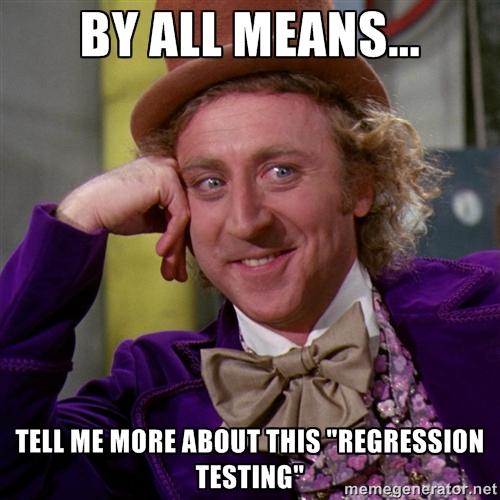
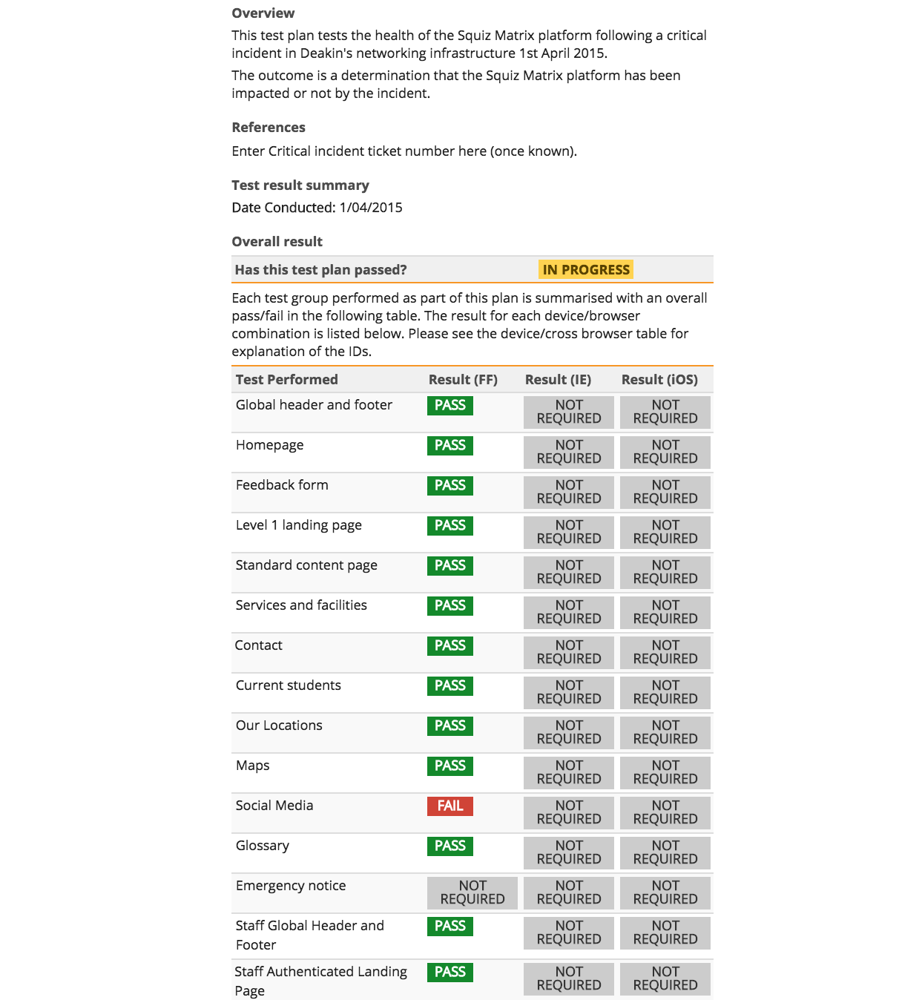
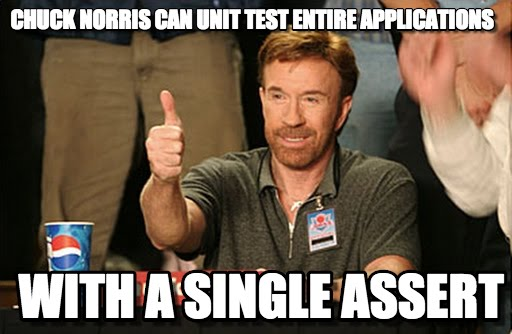

Automating tools for assuring our Digital infrastructures


Actual link: this regression test plan
This is the current Squiz Matrix test plan. It has 254 separate tests in 39 sections.
Automating these tests relieves the test load and accelerates the outcome.

Creating tests
1. Use idempotent tests.
2. Tests refer back to the test plan.
3. Use direct identifiers. Be specific. Slow it down.
4. Watch for AJAX operations.
5. Parameterise where possible.